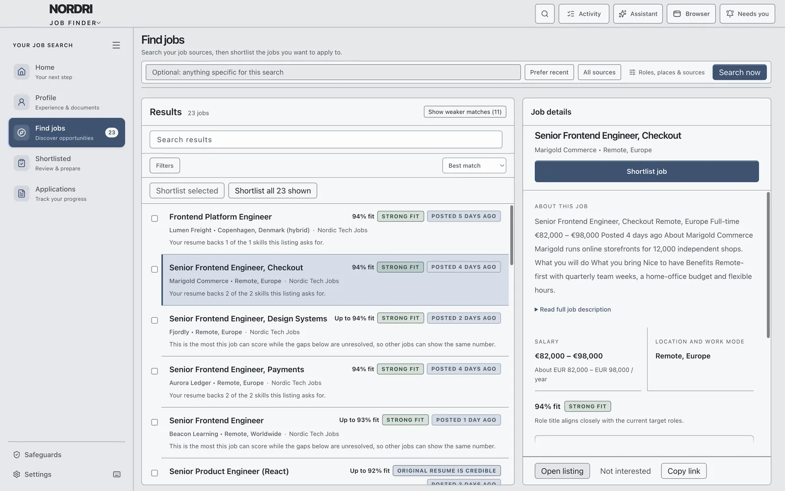
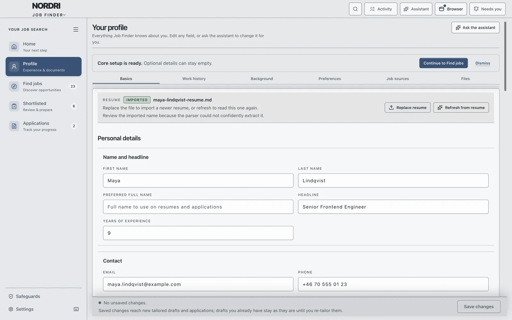
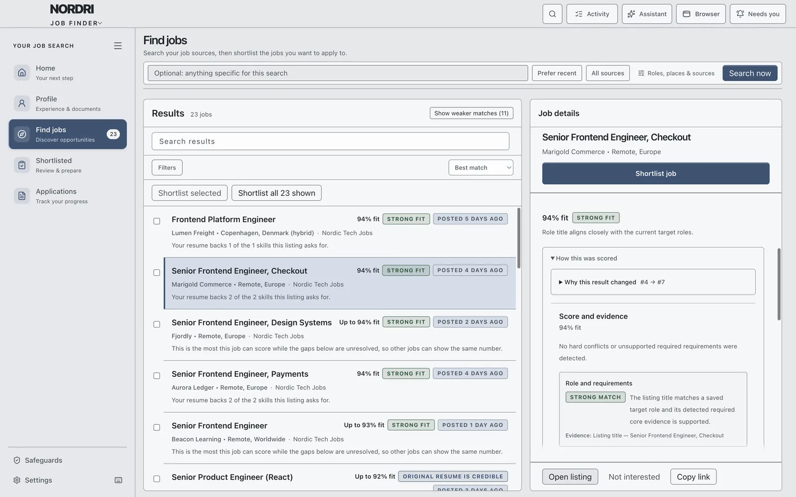
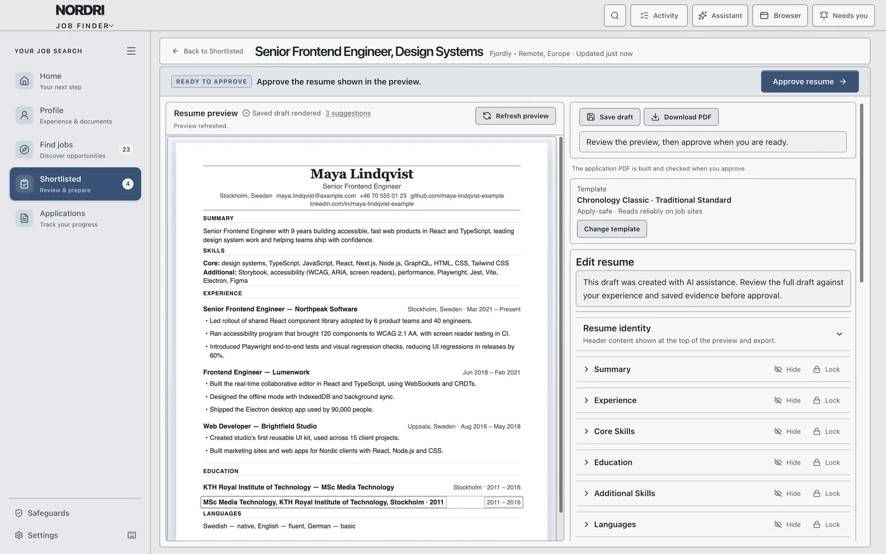
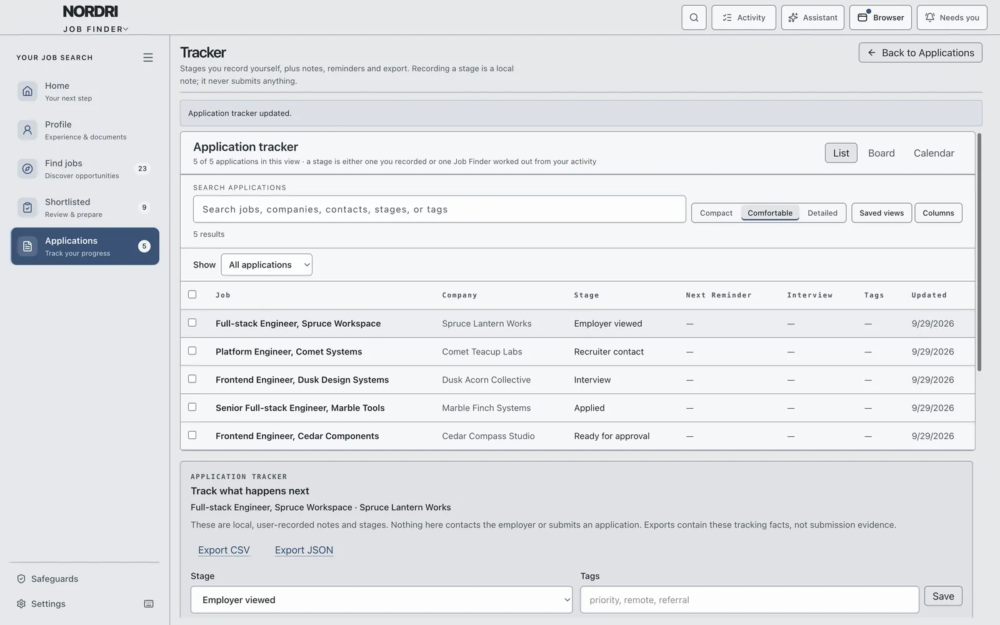
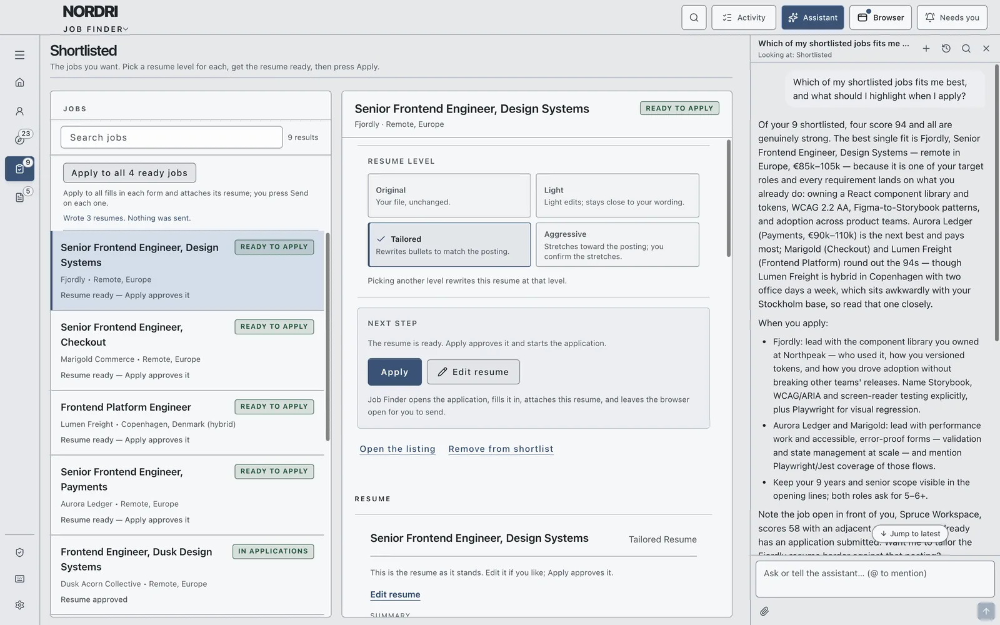
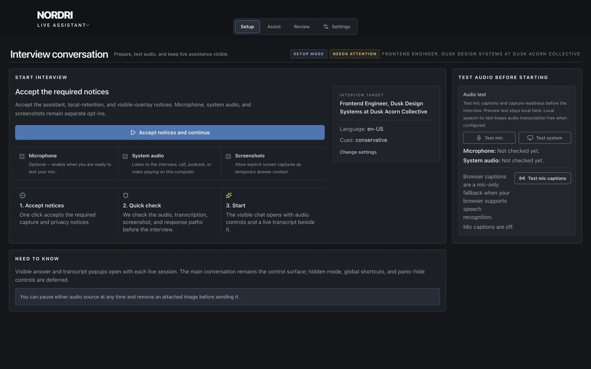

Job Finder, by Nordri
A calmer way to look for work.
Nordri searches the job sites you choose, shows how well each job fits you and why, and prepares a tailored resume and application for each one. You decide what gets sent.
Watch the tour, 38 seconds
How it works
One step at a time.
Job Finder follows the order you work in. Your progress is saved as you go, so you can stop whenever you need to.
-
Profile from your resume
Import a PDF, DOCX, TXT or Markdown file. Nordri fills in your profile and asks only about the gaps.
-
Search the sites you choose
Add job boards or careers pages. Nordri searches them in its own browser and reads every listing.
-
See the fit
Every job gets a fit score, with the evidence behind it.
-
Shortlist
Keep the jobs worth your time, several at once.
-
A resume per job
Choose how much each resume is tailored, then review it.
-
Apply
Nordri fills in the application and attaches the resume.
-
Track
See where each application stands and what it needs.
-
Ask
A side chat that knows your search.
Step 1
Start with the resume you already have.
Import it and Nordri fills in your profile. It asks only about what is missing. Setup is five short steps, and each one is saved as you go.

Step 3
See why a job fits, not only that it does.
Every job gets a fit score against your profile. Open “How this was scored” to see the evidence and what is still unknown. A score is never a black box.
- Role
- Skills
- Location
- Work mode
- Salary

Steps 4 and 5
A resume that fits each job, at the level you choose.
Shortlist the jobs worth your time. For each one, pick a level. Review and edit it in Resume Studio, with apply-safe templates and PDF export. Pressing Apply approves the resume.
-
Original
Your file, unchanged.
-
Light
Stays close to your wording.
-
Tailored
Rewrites bullets to match the posting.
-
Aggressive
Stretches toward the posting. You confirm the stretches.

Step 6
Apply at the pace you are comfortable with.
Nordri opens each application in its browser, fills it in and attaches the resume. You choose one of three modes, once, in Settings.
-
Prepare for me
Nordri fills it in and attaches the resume. You press Send. Nothing is sent in this mode.
-
Ask before sending
Nordri prepares everything, then waits for your go-ahead.
-
Send for me
Nordri prepares and sends. It pauses only when it needs you.
Some steps are always yours
Sign-in, security checks and account creation always pause for you. A password you give Nordri for one task is never stored. A daily limit caps how many applications it sends.
Steps 7 and 8
Always know where things stand.
Each application shows where it is and what it needs from you. “Applied” means the employer's site confirmed it, or you recorded it yourself.


Also in Nordri
When the interview comes, Live Assistant.
An interview companion with visible answer and transcript popups during a live interview, and talking points drawn from the interview as it happens. Open it from an application with “Prepare interview”.

Privacy and control
Your search stays with you.
-
On your computer
Your profile, jobs, resumes and applications are stored on your computer, not in a Nordri account.
-
Nothing to set up
The AI is built in. There is nothing to configure and no API key.
-
You stay in control
Nothing is sent in Prepare for me mode. Safeguards lists every application permission and lets you revoke it.
Questions
Good to know.
Where is my information kept?
On your computer. Your profile, jobs, resumes and applications are not stored in a Nordri account.
Do I need to set up an AI service?
No. The AI is built in. There is nothing to configure and no API key.
Will it send applications on its own?
Only if you choose Send for me. Prepare for me sends nothing, and Ask before sending waits for your go-ahead. Even in Send for me, sign-in, security checks and account creation pause for you, and a daily limit caps how many it sends.
Which job sites can it search?
The ones you add: job boards or company careers pages. Nordri searches them in its own built-in browser.
What if I do not trust a score?
Open “How this was scored”. It shows the evidence for the score and what is still unknown, so you can decide for yourself.
What does “Applied” mean in Nordri?
The employer's site confirmed the application, or you recorded it yourself.
Find your north.
Leave your email and we will let you know when you can try Nordri.
Watch the tour, 38 seconds